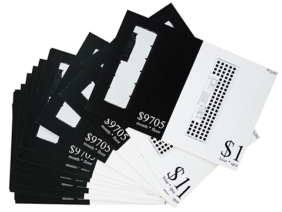
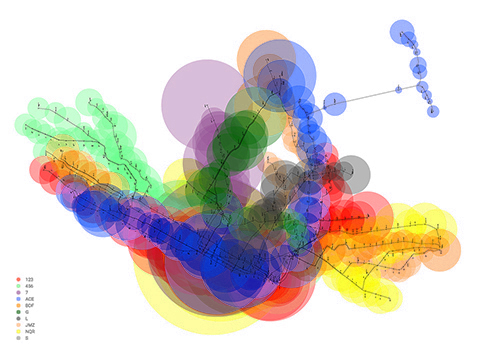
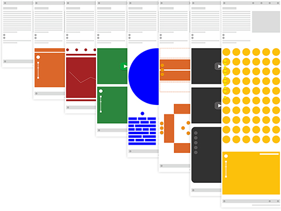
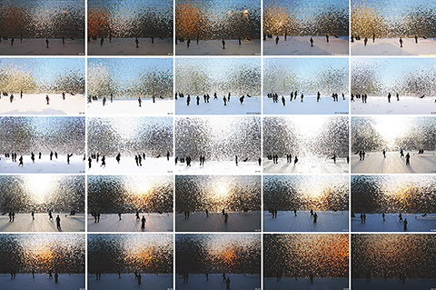

Fei
Hi, I am a thinker, designer and runner based in sunny chilly San Francisco. My interests are paradigm shift,
data,
human-computer handshaking,
and city.
Some of my design and research works can be found
here.
I love electronic/dance music,
photos,
contemporary art
and marathon.
Feel free to drop me a line at
here.
I currently work at Google. Yeah, I am one of those "Internet seekers", and "I was there."
I currently work at Google. Yeah, I am one of those "Internet seekers", and "I was there."





© 2010 - 2016 studiowangfei | all rights reserved